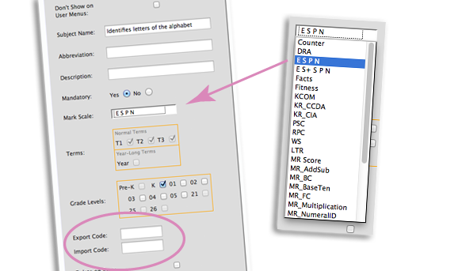

<div class='panelBlock'>
<div class='screenshot'>

<div class='caption' style='
height:70px;
padding-top:10px;'>

			The Main Event: Activities get Marks!<br/>
			You can create as many marks scales as needed.<br/>
			Marks can also be imported and exported from/to analytics systems.
</div>

<div class='image'>

		
</div>

</div>